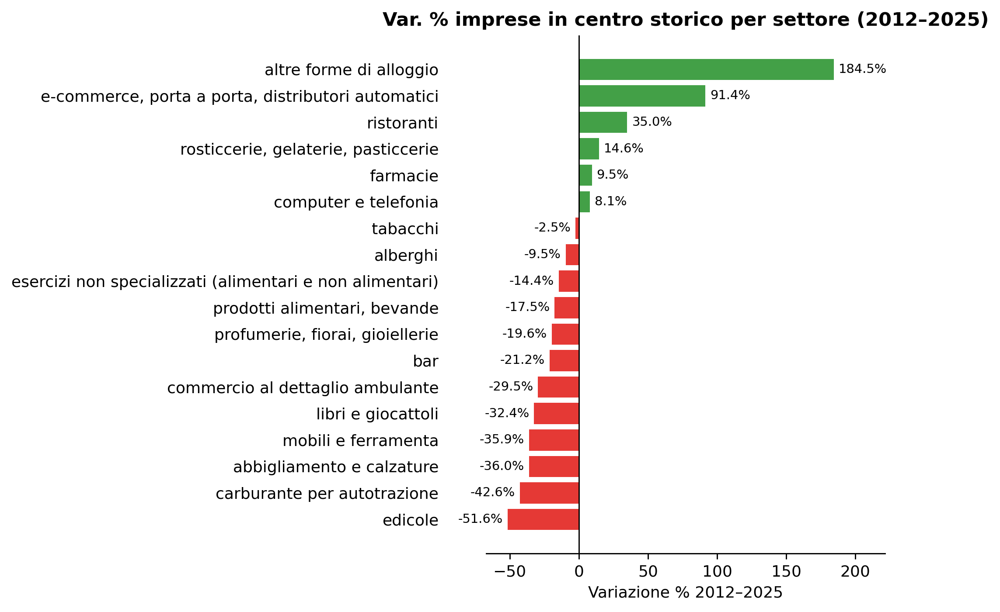
Figura 1: Variazione % imprese in centro storico per settore, aggregato 122 comuni (2012–2025)
Un approfondimento sui dati Confcommercio 2026
Paolo Volterra ![]()
Confcommercio ha pubblicato il 12 marzo 2026 un’analisi sulla demografia d’impresa nei centri urbani italiani, documentando la scomparsa di 156mila attività commerciali tra il 2012 e il 2025. Questo documento riparte dai dati originali — 20 file XLSX regionali con dati per 122 comuni capoluogo — per approfondire la dimensione territoriale del fenomeno: quanto è omogenea la desertificazione tra Nord, Centro e Sud? Tutti i settori si comportano allo stesso modo? La periferia tiene meglio del centro storico?
desertificazione commerciale, centri storici, commercio al dettaglio, analisi territoriale
Il report di Confcommercio sintetizza con efficacia un fenomeno preoccupante: in tredici anni i negozi nei centri storici italiani si sono ridotti di oltre un quarto. Le cifre aggregate sono chiare e coerenti; ma questo calo è distribuito in modo uniforme sul territorio, oppure nasconde dinamiche molto diverse tra Nord, Centro e Sud, e tra i singoli comuni?
Per rispondere, abbiamo scaricato i 20 file XLSX regionali resi disponibili da Confcommercio e li abbiamo riorganizzati in un unico dataset strutturato con 122 comuni capoluogo, 18 settori di dettaglio e tre anni di osservazione (2012, 2019, 2025). Il primo risultato è una conferma: i nostri calcoli replicano le variazioni percentuali pubblicate nell’articolo con uno scarto massimo di un punto percentuale, segno che i dati sono coerenti e l’analisi affidabile. Da lì in poi, abbiamo potuto scavare.

Figura 1: Variazione % imprese in centro storico per settore, aggregato 122 comuni (2012–2025)
Il calo più severo riguarda le edicole (−52%), seguite da carburanti (−43%) e abbigliamento e calzature (−36%): tre settori accomunati da una profonda trasformazione strutturale (digitalizzazione dell’informazione, mobilità elettrica e e-commerce di moda).
Sul versante positivo, spiccano gli alloggi brevi (+184%, cioè B&B e affitti turistici) e i ristoranti (+35%), entrambi trainati dal turismo. Questi due poli — declino del commercio di prossimità e crescita dell’offerta turistica — ridisegnano la fisionomia dei centri storici in modo speculare: meno servizi quotidiani, più esperienza per il visitatore di passaggio.
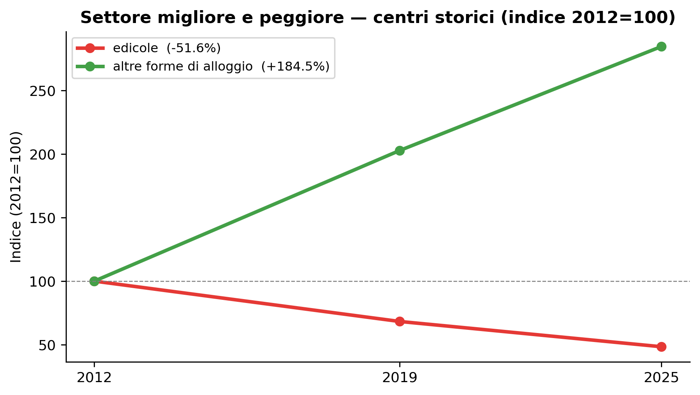
Figura 2: Trend settore migliore e peggiore — centri storici (indice 2012=100)
Il calo nel commercio al dettaglio: −13% tra il 2012 e il 2019, e altri −12% tra il 2019 e il 2025. Il ritmo è rimasto sostanzialmente costante nei due sottoperiodi, il che suggerisce una tendenza strutturale e non un’accelerazione recente legata alla pandemia. I centri storici non hanno subito uno shock improvviso: si svuotano lentamente ma con continuità. Questo ha implicazioni di policy: non si tratta di un’emergenza da gestire nell’immediato, ma di un processo che richiede interventi strutturali di medio periodo.
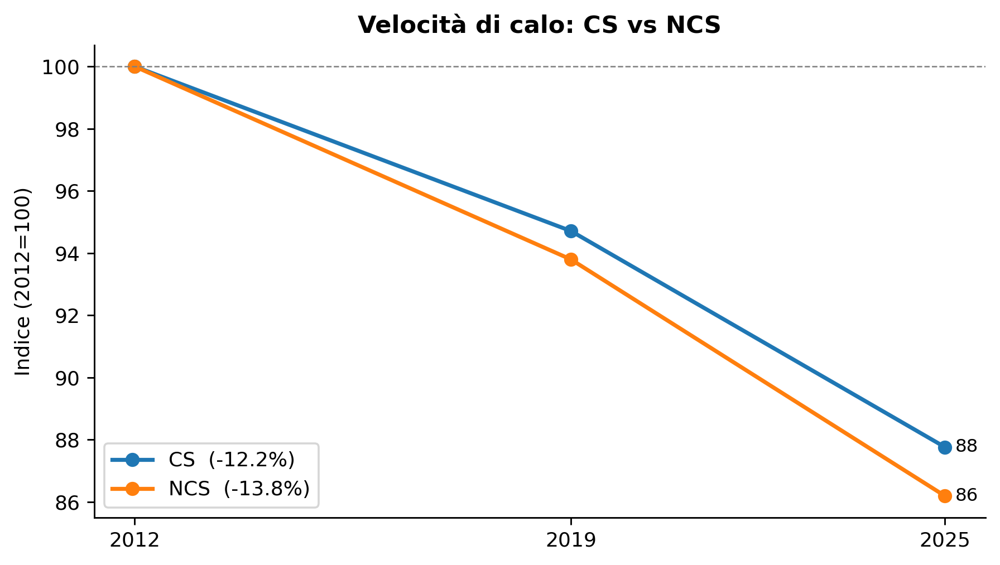
Figura 3: Velocità di calo: centro storico vs non centro storico (indice 2012=100)
Il centro storico perde più velocemente della periferia urbana: −24% contro −19% nel periodo complessivo. Il divario si manifesta già nel primo sottoperiodo (2012–2019) e si mantiene stabile nel secondo, a indicare che la pressione competitiva dell’e-commerce e dei grandi format periferici colpisce in modo selettivo le aree centrali, dove i costi fissi (affitti, accessibilità) sono più alti. Questo è un elemento che rafforza le proposte del progetto Cities di Confcommercio sull’utilizzo strategico dei locali sfitti e sulla disciplina dell’offerta commerciale nelle aree sensibili.
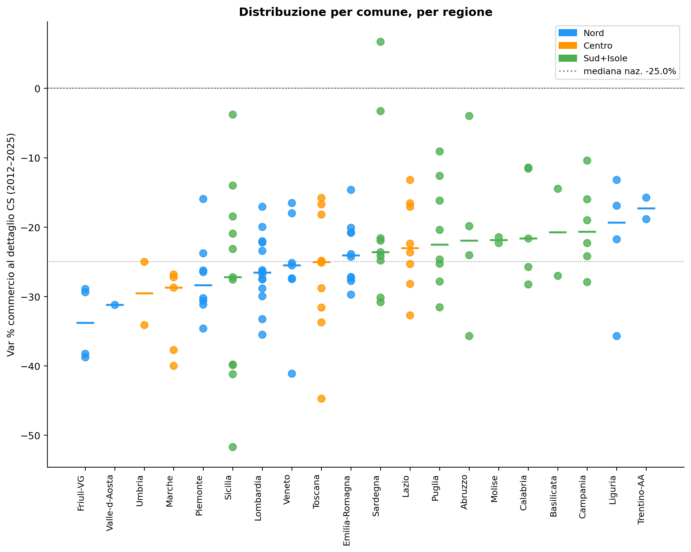
Figura 4: Distribuzione della var% per comune, raggruppata per regione. Il tratto è la mediana regionale.
In questo grafico (ogni punto: un comune capoluogo; tratto orizzontale: mediana della regione) emerge un quadro tutt’altro che uniforme.
Nord e Centro presentano mediane simili intorno a −25/−26% con una dispersione contenuta: i capoluoghi si comportano in modo abbastanza coerente all’interno delle rispettive regioni.
Al Sud e nelle Isole il quadro è più frammentato: alcuni comuni reggono significativamente meglio della media nazionale (Crotone, Olbia, come segnalato anche nel report), ma altri scendono al di sotto del −40%, superando i capoluoghi del Nord più colpiti come Belluno e Vercelli. Il coefficiente di variazione nel Sud+Isole è del 48%, quasi il doppio rispetto al Nord (25%).
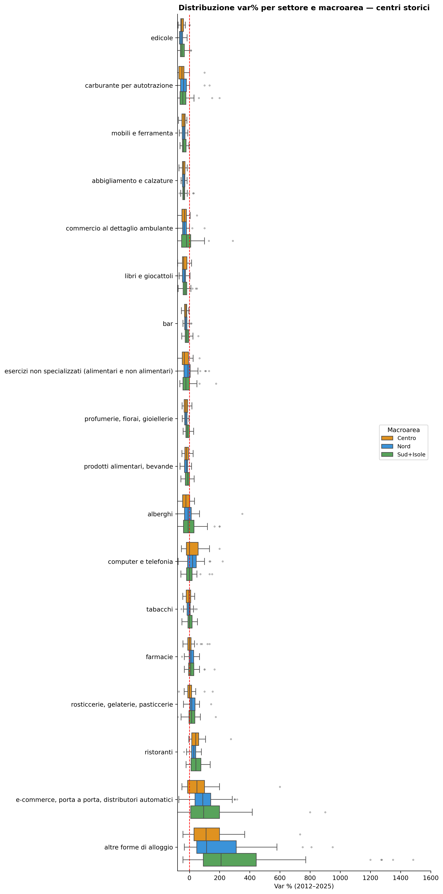
Figura 5: Distribuzione della var% per settore e macroarea — centri storici (2012–2025)
Il boxplot per settore e macroarea mostra che i settori strutturalmente in crisi — edicole, carburanti, abbigliamento — sono omogenei su tutto il territorio: la loro contrazione è universale e indipendente dalla geografia, ed è guidata da forze tecnologiche e di mercato che non risparmiano nessun capoluogo. Al contrario, i settori turistici (altri alloggi, ristoranti) mostrano una varianza molto più alta, specialmente al Sud: la crescita dei B&B e delle strutture ricettive è concentrata in pochi comuni con forte vocazione turistica, mentre la gran parte delle città meridionali non ne beneficia.
Per verificare se le differenze visibili nel grafico siano statisticamente robuste o semplice variazione casuale, abbiamo applicato il test di Kruskal-Wallis, un test non parametrico che confronta la distribuzione di una variabile — in questo caso la variazione percentuale del commercio al dettaglio nei centri storici — tra tre o più gruppi indipendenti, senza richiedere che i dati seguano una distribuzione normale. Il risultato è significativo (H = 6,30, p = 0,043): le tre macroaree non si comportano allo stesso modo, e la probabilità che questa differenza sia dovuta al caso è inferiore al 5%.
Il test però non dice quali gruppi differiscono tra loro. Per rispondere, abbiamo condotto confronti a coppie con il test di Mann-Whitney, che verifica se la distribuzione di un gruppo tende sistematicamente a valori più alti o più bassi rispetto a un altro. Il risultato è netto: Nord e Centro sono praticamente indistinguibili (p = 0,89) — le loro distribuzioni si sovrappongono quasi completamente, con mediane rispettivamente a −26,4% e −25,3%. La vera frattura è tra queste due macroaree e il Sud+Isole, che differisce da entrambe in modo statisticamente significativo (p = 0,031 vs Nord, p = 0,037 vs Centro).
Sul piano delle medie, il Mezzogiorno perde meno (−22% contro −26%), e questa è la cifra che circola nel dibattito pubblico — incluso il report di Confcommercio, che cita Crotone e Olbia tra i comuni più resilienti. Ma la media meridionale è accompagnata da una deviazione standard di 10,7 punti percentuali, contro i 6,5 del Nord: il coefficiente di variazione del Sud+Isole è del 48%, quasi il doppio rispetto al Nord (25%). In termini concreti, questo significa che nel Mezzogiorno i capoluoghi si disperdono su un intervallo che va da −52% (il calo più severo dell’intero campione) a +7% (l’unico comune con saldo positivo): una forbice di quasi 60 punti che non ha equivalenti al Nord o al Centro.
La narrativa “il Sud resiste” cattura la tendenza centrale ma nasconde questa biforcazione, che è invece la caratteristica più rilevante del Mezzogiorno e quella con le implicazioni di policy più importanti.
Il dato aggregato sul Sud+Isole nasconde la forbice più ampia dell’intero campione: si va da Cagliari, unico comune con saldo positivo (+6,7%) tra tutti i 122 capoluoghi analizzati, ad Agrigento con −51,7%, il calo più severo del campione. Capire cosa separa questi due estremi è la domanda più rilevante per le politiche territoriali nel Mezzogiorno.
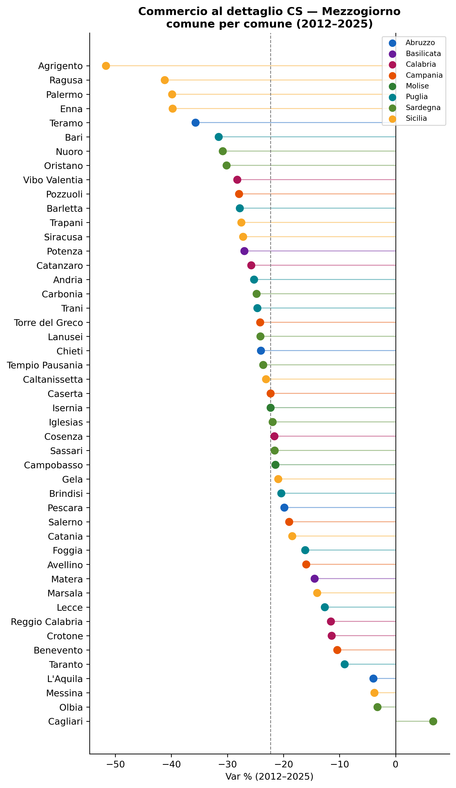
Figura 6: Variazione % del commercio al dettaglio in centro storico per comune del Mezzogiorno (2012–2025), ordinata dal calo minore al maggiore. Colori per regione.
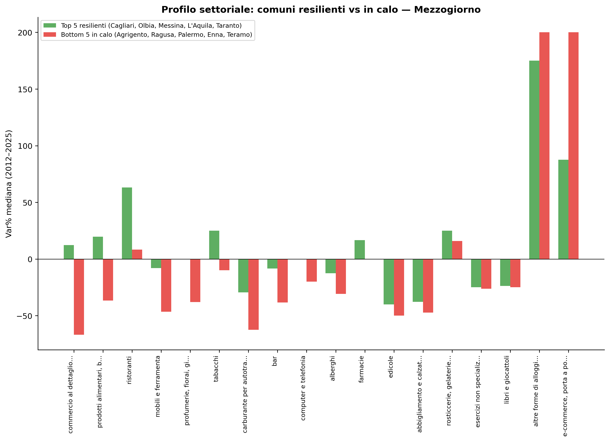
Figura 7: Profilo settoriale mediano dei 5 comuni più resilienti vs i 5 più colpiti nel Mezzogiorno (CS, 2012–2025).
Il dotplot mostra una distribuzione asimmetrica: la maggioranza dei capoluoghi meridionali si concentra nella fascia tra −10% e −30%, ma le code sono molto più ampie che al Nord. La Sicilia è la regione con la situazione più critica — quattro comuni tra i cinque peggiori del Mezzogiorno (Agrigento, Ragusa, Palermo, Enna) — mentre la Sardegna produce gli estremi opposti: Cagliari è l’unico comune in territorio positivo di tutto il campione, ma Nuoro e Oristano si collocano nelle posizioni intermedio-basse.
Il confronto tra i profili settoriali dei cinque comuni più resilienti (Cagliari, Olbia, Messina, L’Aquila, Taranto) e i cinque più colpiti (Agrigento, Ragusa, Palermo, Enna, Teramo) rivela qualcosa di controintuitivo: la crescita degli alloggi brevi è praticamente uguale nei due gruppi — +175% nei resilienti, +200% nei più colpiti — il che conferma, questa volta nel solo Mezzogiorno, che il turismo non spiega la resilienza commerciale (r = 0,07, p = 0,66).
Ciò che invece differenzia i due gruppi è la vitalità del commercio di prossimità: nei comuni resilienti i prodotti alimentari e bevande crescono del +20%, l’ambulante del +12%, le farmacie del +17%, i bar calano solo dell’−8%. Nei comuni più colpiti, al contrario, l’ambulante crolla del −67%, i prodotti alimentari del −37%, i bar del −38%. Non è il turismo che salva i centri storici meridionali — è la tenuta della domanda locale. I comuni resilienti sono quelli dove i residenti continuano ad acquistare di prossimità; quelli in crisi hanno subito un doppio processo di svuotamento: meno residenti attivi e meno spesa locale.
I dati mostrano che alcuni settori crescono e altri calano. Ma la domanda rilevante è: nei comuni dove crescono gli alloggi brevi e i ristoranti, calano di più i negozi tradizionali? Se sì, siamo in presenza di un effetto sostituzione — il centro storico si “turistifica”, perdendo la sua funzione di servizio per i residenti.
La prima analisi è una matrice di correlazione di Spearman tra le variazioni settoriali nei 122 comuni: se due settori si muovono nella stessa direzione nei medesimi comuni la correlazione è positiva; se in direzioni opposte, negativa.
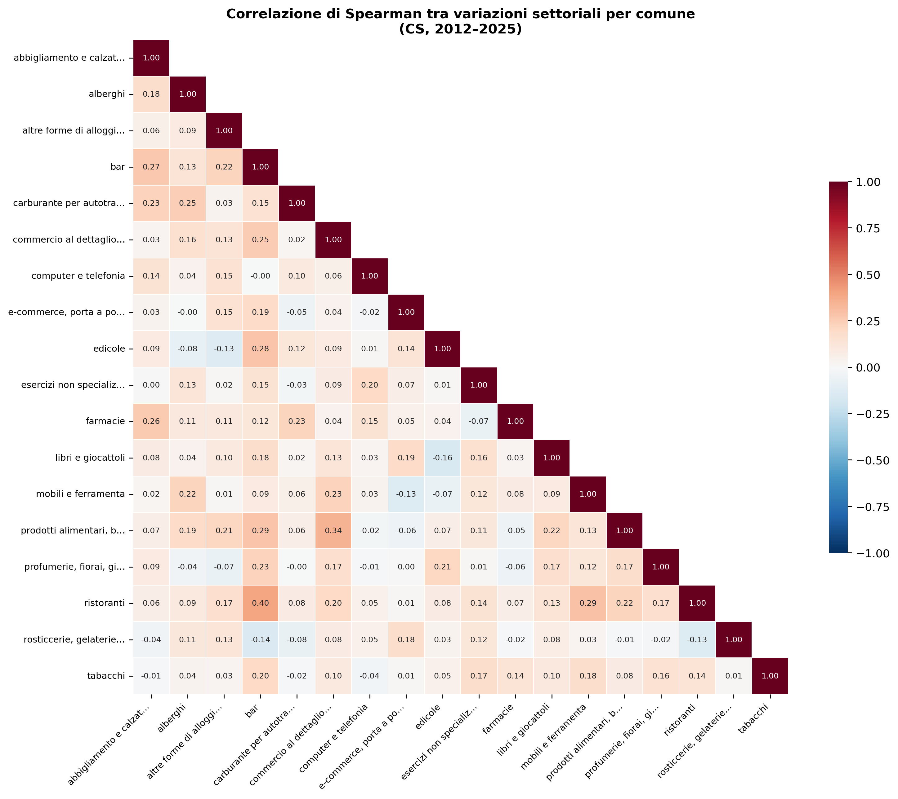
Figura 8: Matrice di correlazione di Spearman tra variazioni settoriali per comune — centri storici (2012–2025).
La seconda analisi mette in relazione diretta la crescita degli alloggi brevi con la variazione media dei settori strutturalmente in calo (abbigliamento, edicole, carburanti) per ogni comune. Ogni punto è un capoluogo; la retta tratteggiata è la regressione sull’intero campione.
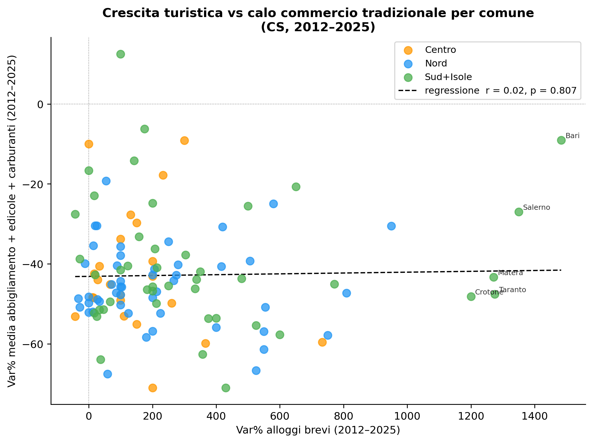
Figura 9: Crescita turistica (alloggi brevi) vs calo del commercio tradizionale per comune — centri storici (2012–2025).
I due grafici convergono su una risposta chiara: l’effetto sostituzione non esiste, o è statisticamente irrilevante.
La matrice di correlazione mostra che le variazioni settoriali sono quasi tutte indipendenti tra loro: la grande maggioranza delle celle si colloca intorno allo zero. Le uniche correlazioni moderatamente positive riguardano coppie che condividono la stessa clientela per ragioni ovvie — bar e ristoranti si muovono insieme (ρ = 0,40), così come il commercio ambulante e i prodotti alimentari (ρ = 0,34). La correlazione tra alloggi brevi e i settori strutturalmente in calo (edicole, abbigliamento, carburanti) è invece praticamente nulla o leggermente negativa al massimo: non c’è nessun segnale che la crescita dei B&B “mangi” il commercio tradizionale.
Lo scatter lo conferma con numeri precisi: r = −0,03, p = 0,79 su 115 comuni. La nuvola di punti è completamente dispersa senza alcuna direzione riconoscibile. I comuni con la crescita più intensa degli alloggi brevi — tutti al Sud (Bari, Salerno, Taranto, Matera, Crotone, con variazioni oltre il 1.000%) — mostrano cali del commercio tradizionale del tutto nella norma, simili a comuni dove il turismo ricettivo è cresciuto poco.
La conclusione ha un’implicazione di policy importante: la desertificazione commerciale dei centri storici italiani non è un effetto collaterale del turismo, ma un processo autonomo guidato da forze strutturali — e-commerce, mobilità elettrica, digitalizzazione — che colpisce tutti i comuni con la stessa intensità indipendentemente dalla loro vocazione turistica. Intervenire sull’offerta turistica non risolve il problema dei negozi che chiudono, e viceversa: sono due dimensioni che richiedono politiche separate.
L’analisi di correlazione ha mostrato che i settori si muovono in modo largamente indipendente. Ma è possibile raggruppare i comuni in profili omogenei di trasformazione complessiva? Per rispondere applichiamo una K-means su tutte le variazioni settoriali, riducendo poi lo spazio a due dimensioni con PCA per la visualizzazione.
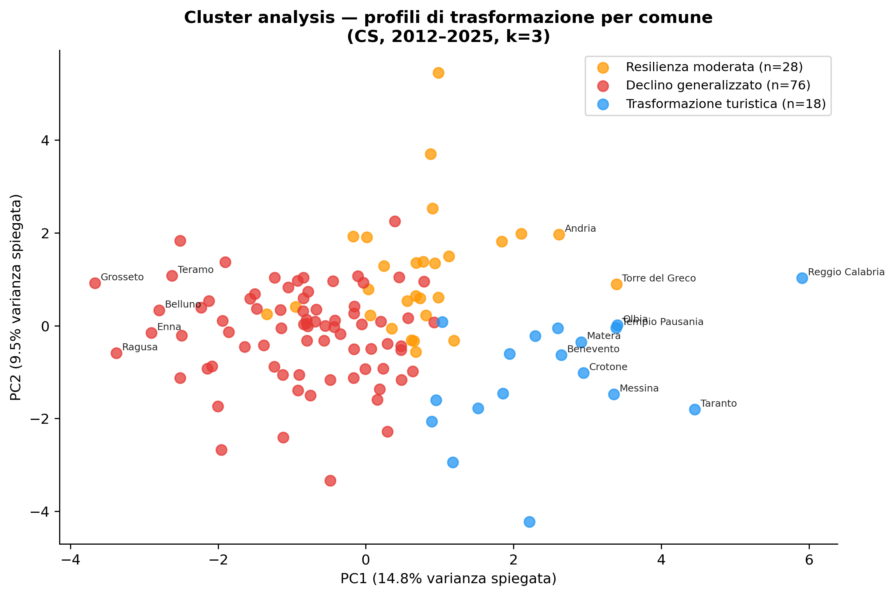
Figura 10: Cluster analysis sui profili di trasformazione settoriale per comune (CS, 2012–2025). Proiezione PCA a 2 componenti. k=3, silhouette=0.11.
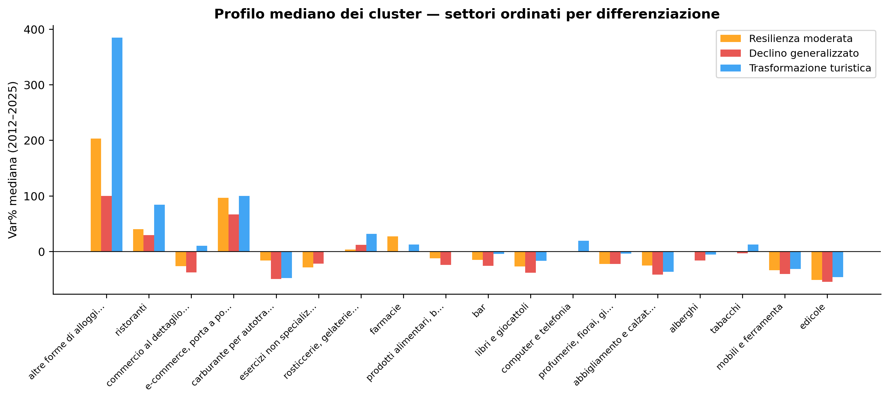
Figura 11: Mediane della var% settoriale per cluster — centri storici (2012–2025). Settori ordinati per differenza tra cluster.
I tre cluster emergono con profili distinti, pur con una separazione non netta (silhouette = 0,11: i confini sono sfumati e vanno letti come orientativi).
Il cluster “Declino generalizzato” raccoglie 76 comuni — la netta maggioranza — distribuiti su tutte le macroaree. È il profilo “normale” della desertificazione italiana: abbigliamento e calzature −42%, carburanti −50%, edicole −55%. Gli alloggi brevi crescono del 100%, ma bar e ristoranti perdono terreno (−26% e +29% rispettivamente). Non c’è una dimensione turistica rilevante.
Il cluster “Resilienza moderata” (28 comuni, mix geografico con Venezia, Firenze, Pisa, Trento, Bolzano) mostra cali più contenuti in quasi tutti i settori: abbigliamento −25%, carburanti −17%, bar −15%. La crescita degli alloggi brevi è sostenuta (+203%) ma non esplosiva, e le farmacie crescono del 27%. Questi comuni sembrano beneficiare di una domanda locale più solida o di una vocazione turistica già consolidata nel 2012 che ha attutito la contrazione.
Il cluster “Trasformazione turistica” (18 comuni, quasi tutti al Sud: Palermo, Salerno, Matera, Lecce, Crotone, Olbia, Cagliari, Siracusa) è il più definito: alloggi brevi +385%, ristoranti +84%, bar sostanzialmente stabile (−5%), commercio ambulante +10%. Si tratta di comuni che nel 2012 partivano da un’offerta ricettiva quasi assente e hanno vissuto una crescita esplosiva del turismo breve — trainata in parte dal boom delle piattaforme di affitti brevi e in parte dalla riscoperta di destinazioni meridionali. Eppure anche in questo cluster il commercio strutturalmente in crisi (edicole −47%, carburanti −48%, abbigliamento −37%) cala nella stessa misura degli altri: la crescita turistica non ha compensato la desertificazione tradizionale.
Il report di Confcommercio è costruito su aggregati nazionali e classifiche di comune, strumenti efficaci per la comunicazione pubblica. Il nostro approfondimento, partendo dagli stessi dati, aggiunge tre elementi che possono essere utili per l’analisi interna.
Il primo è la verifica di coerenza: i dati scaricati replicano le cifre pubblicate con scarto inferiore a un punto percentuale per tutti i settori, il che conferma l’affidabilità della fonte e consente di costruire ulteriori analisi con fiducia.
Il secondo è la misura dell’eterogeneità. Non basta sapere che il Sud resiste mediamente meglio: la dispersione nel Mezzogiorno è doppia rispetto al Nord, e questo significa che le politiche nazionali di contrasto alla desertificazione rischiano di essere mal calibrate se non tengono conto di queste differenze. Un comune meridionale in forte calo ha esigenze molto diverse da un comune con B&B in crescita, anche se appartengono alla stessa regione.
Il terzo elemento è la distinzione tra tendenze strutturali e dinamiche locali. I settori in calo per ragioni tecnologiche (edicole, carburanti) non risponderanno a incentivi di prossimità: il loro declino è irreversibile. I settori ad alta varianza locale (turismo, ristorazione) invece segnalano che le condizioni di contesto — accessibilità, politiche urbane, investimenti — fanno la differenza e possono essere un terreno d’azione concreto per le associazioni territoriali.